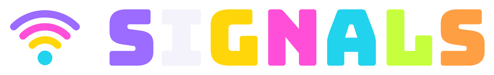

ON OTHER BACKGROUNDS (use the single-colour versions)

Space around the logo: at least the height of the dot ×2 on every side. Smallest size: mark 16 px wide, full logo 90 px wide. Don't: stretch it, change the colour order, add shadows or outlines, rotate it, or put the colour logo on a busy photo.